The Angular Momentum of a Rigid Body Rotating About a Fixed Axis
To develop the angular momentum of a rigid body, we model a rigid body as being made up of small mass segments, mi. In (Figure), a rigid body is constrained to rotate about the z-axis with angular velocity ωz. All mass segments that make up the rigid body undergo circular motion about the z-axis with the same angular velocity. Part (a) of the figure shows mass segment mi with position vector ri from the origin and radius Ri to the z-axis. The magnitude of its tangential velocity is vi = Riωz. Because the vectors vi and ri are perpendicular to each other, the magnitude of the angular momentum of this mass segment is
li = ri (mivi) sin 90°
Using the right-hand rule, the angular momentum vector points in the direction shown in part (b). The sum of the angular momenta of all the mass segments contains components both along and perpendicular to the axis of rotation. Every mass segment has a perpendicular component of the angular momentum that will be cancelled by the perpendicular component of an identical mass segment on the opposite side of the rigid body Fig.(b). Thus, the component along the axis of rotation is the only component that gives a nonzero value when summed over all the mass segments. From part (b), the component of li along the axis of rotation is
Notice that ri and Ri are the same except for the z component.
The net angular momentum of the rigid body along the axis of rotation is
The summation ∑i miRi2 is simply the moment of inertia I of the rigid body about the axis of rotation. We thus have
Lz = Iωz
This equation is valid to all rigid bodies, but it refers only to the z-component of L. If the body is symmetrical about the z-axis then L results parallel to z. as in the case of study. In this case L and ω are parallel, so that
L = Iω (only for sufficient symmetrical bodies) 13.1.1